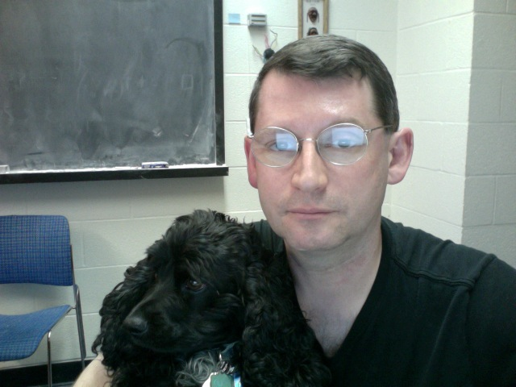

The Home Page of Alex Iosevich

Zog nit keyn mol, az du geyst dem letstn veg,
Khotsh himlen blayene farshteln bloye teg, -
Kumen vet nokh undzer oysgebenkte sho,
S'vet a poyk ton undzer trot - mir zaynen do!
Hirsh Glick (1922-1944)
Information for prospective Ph.D. students
Links to some of my mathematical youtube videos
Online journal of Analytic Combinatorics
Summer Undergraduate Research
My past and current Ph.D. students
Past and current postdocs I worked with
My collaborators
Link to my Math Geneology Page
Past and current Honors Thesis students
CoronaVirusLectureSeries
Careers in Data Science Lecture Series- ongoing program
StemForAll2025 - the program is going national!
Meeting Schedule Summer 2025
Vertical Integration of Research
Math 471 - Real Analysis I, Fall 2025
Wise Thoughts of Alex Iosevich
TABLE OF CONTENTS
Research
(Direct link to expository papers)
(
Direct link to my CV)
My poetry and translations
Undergraduate honors thesis in mathematics at the University of Rochester
My collaborators
Teaching (including
the list of books I recommend)
My papers on MathSciNet
Conferences I helped organize- past, present and future
Current and former graduate students